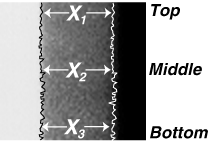

XF = (Xf1 + X f2 + Xf3)/(n)
| NOTE: | It is important that you take multiple measurements. The more measurements you take, the more accurate the measurement. There is less likelihood of a measurement error and you will increase the accuracy of the alignment. |
Illustration 5: XF and XR measurement points
